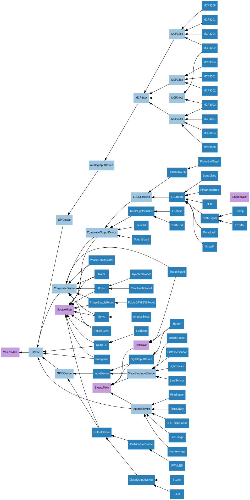
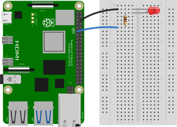
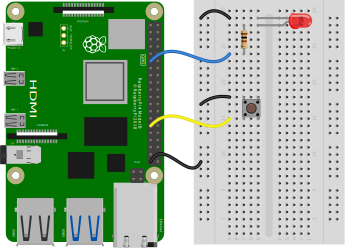
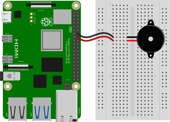
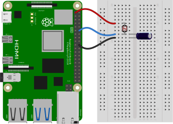
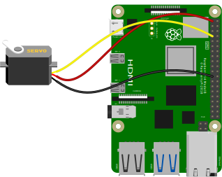
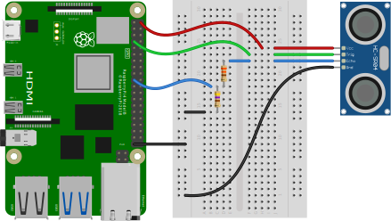
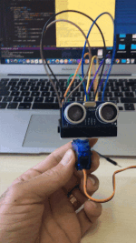
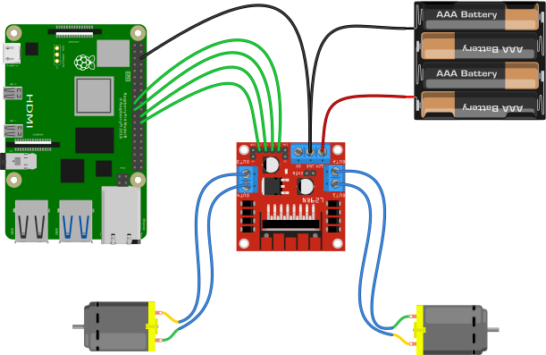
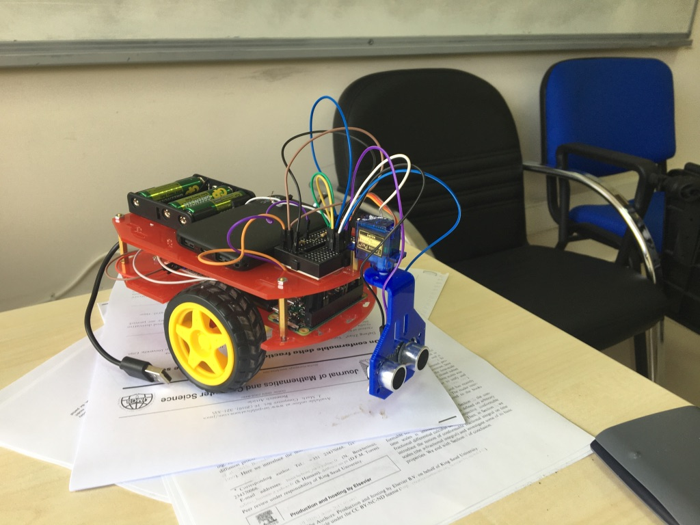

Raspberry Pi ile Fiziksel Hesaplama
Kayıt Tarihi:
Son Güncelleme:
Bu yazımda size Raspberry Pi kartınıza çeşitli elektronik bileşenleri nasıl bağlayacağınızı ve bunlarla nasıl iletişim kurabileceğinizi açıklayacağım. Farklı kombinasyonlarla istediğiniz özelliklerde robotlar geliştirebilirsiniz. Programlama için Python kullanacağız, minimum düzeyde elektronik bilgisine ihtiyacınız olabilir.
Anahtar Kelimeler: buton · buzzer · dc motor · direnç · GPIO · gpiozero · HCSR04 · kondansatör · ldr · led · Raspberry Pi · Raspberry Pi Zero W · robot · servoBu yazımda size Raspberry Pi ile çeşitli elektronik bileşenler kullanarak nasıl fiziksel hesaplama yapılabildiğini açıklayacağım. Fiziksel hesaplamadan kasıt; Raspberry Pi üzerinde bulunan genel amaçlı giriş/çıkış pinleri (GPIO, general purpose input/output pins) yardımıyla butonlar, led lambalar, motorlar ve çeşitli sensörlere bağlanmak, bunlara programatik olarak veriler göndermek veya bunlardan gelen verileri dinlemek ve bu verileri işlemektir.
Bunun için öncelikle Raspberry Pi üzerindeki pinleri anlamak gerekiyor, kart üzerinde çeşitli amaçlarda kullanılabilecek şekilde toplam 40 adet pin mevcuttur. Aşağıdaki grafikte bu pinlerin yerleşimi gösteriliyor, burada yeşil renkli olanlar GPIO pinleridir. Kırmızı ve turuncu olanlar sırasıyla sabit olarak 5V ve 3V gerilim verir, bunlarla karta bağladığınız led lamba gibi kaynağa ihtiyaç duyan bileşenlere güç verebilirsiniz. Siyah olanlar topraklama (ground) için kullanılır, diğerleri de farklı iletişim protokolları için ayrılmıştır.

Bağladığımız bileşenlerle iletişim kurmak için Python programlama dilini kullanacağız, bu zaten Raspberry Pi ile yüklenmiş olarak geliyor. Genel mantık şudur; bir pinin değeri aldığı gerilime göre ya 1'dir ya da 0, kodlama ile bu gerilimi okuyabilir ve değiştirebiliriz. Mesela bir buton ve bir led bağladığımızı düşünelim ve butona basıldığında lambanın yanmasını istiyoruz. Butonun bağlandığı pinin değerini okuyacağız, bu değer 1 ise led bağlı pinin değerini 1 yapacağız. Pin değerlerini okumayı ve yazmayı becerebilirsek gerisi çok basit bir if-else işlemine bakıyor. Biraz daha karmaşık olarak mesela iki adet tekeri döndüren iki adet motor ve bir mesafe ölçen sensör bağlı olan bir düzeneği düşünelim. Amacımız motorları aynı anda çalıştırıp düzeneğin ileri doğru hareket etmesini sağlamak, aynı zamanda sürekli olarak mesafe sensörünü okuyarak bir engel ile karşılaştığında yön değiştirmesini sağlamak olsun. Bu durumda önce her bir motorun bağlandığı pinleri aynı anda 1 yaparak başlarız ve mesafe sensörünü de sürekli olarak okuruz, bu durumda düzenek tekerleri döndürerek ileri doğru hareket eder. Düzeneğin önüne bir engel çıktığı zaman mesafe sensörü değerleri düşmeye başlar, belirlediğimiz bir eşiğin altına düştüğü zaman motorları 0 yaparak durdururuz ve mesela sağa dönmek isteriz. Sağa dönmek için motor değerleri farklı olmalı çünkü sol tekerlek ileri doğru ve sağ tekerlek geri doğru hareket etmelidir. Bunun için sol motor pinini 1 yaparız, sağ motoru ters yönde hareket ettirmek için akım yönünü değiştirmemiz gerekir. Bunun için her dönüş öncesinde düzeneği söküp kabloların yerini değiştirmemiz gerekir aslında, ama buna gerek kalmadan akım yönü değiştirebileceğimiz ara bileşenler var. Bunlardan birini motor ve Raspberry Pi arasına bağlayabiliriz ve bundan sonra sağ motoru -1 yaparak ters yönde hareket ettirebiliriz. Bu işlem karmaşık değil aslında, programlama açısından birkaç if-else ve birkaç döngüden ibaret. Önemli nokta elektronik bileşenlere erişim.
Şimdi bu bileşenlere erişimi nasıl sağlayacağımızı açıklayayım. Aslında yukarıda açıkladığım kadar düşük seviye bir kodlamaya gerek yok çünkü Python'da bunları yapmaya yarayan çok kapsamlı ve pratik bir modül var: gpiozero. Bu modülde en sık kullanılan elektronik bileşenler için hazır fonksiyonlar var, mesela bir led lambayı yakmak için onun pin numarasını belirterek bir LED sınıfı instance aldıktan sonra sadece LED.on() yapmamız yeterli. Eğer bu modülde içerilmeyen bir bileşen ile çalışıyorsanız sadece o zaman düşük seviye kodlama yaparsınız, diğer durumlarda gpiozero işimizi çok kolaylaştırır. Bu modülde her şey kabaca pinler (pins) ve aygıtlar (devices) olarak ikiye ayrılır, biz bileşenler için devices sınıfı ile çalışacağız. Modülün device hiyerarşisi aşağıdaki görselde açıklanıyor, oldukça kapsamlı olduğundan üzerine tıklayarak büyütmeniz gerekebilir.

{kind=link}
Şimdi harekete geçelim ve ilk uygulamamızı yapalım, basit bir örnek olarak bir led lambayı kontrol etmeye çalışalım. Led lambaların bir girişi bir de çıkışı vardır, bunlara gerilim ve topraklama vererek yanmalarını sağlarız. Fakat 3V gerilim bir led için çok fazladır ve lambanın bozulmasına neden olur, bundan dolayı gerilim hattına bir direnç bağlayarak akımı düşürmeliyiz (50Ω üzerinde herhangi bir direnç iş görür). Önce led bağlantısını aşağıdaki şekilde görüldüğü gibi yapalım. Led lambanın uzun bacağı seri olarak bir dirence ve Raspberry Pi'in 3V pinine bağlanacak, diğer bacağı da herhangi bir topraklama pinine.  Şimdi aşağıdaki gibi led lambamızı kontrol edebiliriz, 17 numaralı pine bağladığımız için kodlarda buna dikkat ediyoruz. Aşağıdaki programı çalıştırdığımızda led lambamız birer saniye aralıkla yanıp sönmelidir.
from gpiozero import LED
from time import sleep
led = LED(17)
while True:
led.on()
sleep(1)
led.off()
sleep(1)
Şimdi bir adım daha ileriye gidelim ve bir de buton bağlayalım, aşağıdaki gibi bağlantınızı yapın.  Aşağıdaki gibi buton yardımıyla lambayı kontrol edebilirsiniz. Bu programı çalıştırdığınzda butona basınca üç saniye boyunca led lambayı yakacak sonra söndürecektir.
from gpiozero import LED, Button
from time import sleep
led = LED(17)
button = Button(5)
button.wait_for_press() #butona basana kadar bir sey yapma
led.on()
sleep(3)
led.off()
Şimdi buzzer kontrol etmeye çalışalım, bu bileşen bip sesi çıkarmaya yarar. Aşağıdaki gibi bağlantımızı yapalım.  Şimdi artık gpiozero modülüyle kolayca düzeneğimiz ses çıkarabilir. Aşağıdaki kodları çalıştırın, bir saniye aralıklı olarak buzzerımız bip sesi çıkaracaktır. Ben söküp takmak ile uğraşmamak için aynı breadboard üzerinde çalıştım, siz isterseniz önceki bileşenleri sökebilirsiniz.
from gpiozero import LED, Button
from time import sleep
buzzer = Buzzer(23)
while True:
buzzer.on()
sleep(1)
buzzer.off()
sleep(1)
Şimdi de ışık sensörü kontrol edelim, ldr (light dependent resistor) dediğimiz bu bileşen aslında ışığa duyarlı bir dirençten ibarettir ve üzerine düşen ışık şiddetine göre akımı değiştirir. Buna küçük bir kondansatör (1μf yeterli) ekleyeceğiz, kondansatörde biriken gerilim miktarına göre ışık şiddetini tespit edebiliriz. Aşağıdaki gibi bağlantıları yapalım.  Aşağıdaki programı çalıştırınca ekrana sürekli olarak ışık şiddeti değerinin yazıldığını göreceksiniz. Sensörü küçük bir kutuyla kapatmayı deneyip değerleri gözlemleyin.
from gpiozero import LightSensor
ldr = LightSensor(18)
while True:
print(ldr.value)
şimdi bir servo motor çalıştıralım, bu tür motorlar sınırlı açısal hareket yaparlar ve robotik kol tasarımında sıklıkla kullanılırlar. Bağlantımızı aşağıdaki gibi yapalım.  Aşağıdaki program ile servonuzu çalıştırabilirsiniz, bu program servoyu birer saniye aralıklara başlangıç, orta ve son konumuna getirir.
from gpiozero import Servo
from time import sleep
servo = Servo(17)
while True:
servo.min()
sleep(1)
servo.mid()
sleep(1)
servo.max()
sleep(1)
Şimdi HCSR04 mesafe sensörü kontrolü yapalım. Bu aygıtlar üzerinde bulunan bir verici ultrasonik seviyede ses dalgaları üretir, diğer bir alıcı da yansıyıp geri gelen ses dalgasını alır. Verici ve alıcı çalışması arasındaki geçen süre hesaplanır ve ses hızı ile mukayese edilerek en yakın cismin sensöre ulan uzaklığı tespit edilir. Bu sensörler echo ve trig olmak üzere iki çıkışa sahiptir ve iki pin kullanır. Bu pinler farklı gerilimler ile çalışır, dolayısıyla 5V çıkışını kullanırız ve dirençlerle akımı ayarlarız. Aşağıda sırasıyla 330Ω ve 470Ω dirençler kullandım.

Aşağıdaki programla sensörü kullanalım, bu program sensörün önündeki mesafeyi cm cinsinden ekrana yazdırır. Elinizi sensör önünden geçirerek deneme yapabilirsiniz.
from gpiozero import DistanceSensor
ultrasonic = DistanceSensor(echo=17, trigger=4)
while True:
print(ultrasonic.distance*100)
Servo motor ve HCSR04 sensör kullanarak aşağıdaki gibi ev yapımı bir radar üretebilirsiniz. 
Son olarak bir de DC motor kontrolüne değineyim, bu motorlar sürekli dönerek tekerlek bağlı düzenekleri hareket ettirebilir. Daha önce bahsettiğim gibi hareket yönünü değiştirmek için akım yönünü değiştirmeye ihtiyaç duyarız ve bunun için H-bridge denilen elektronik bileşenlere ihtiyaç duyarız, en basitleri L298N denilen bileşenlerdir. Aşağıda iki tekerleği döndürmek için iki adet DC motor ve bir dual H-bridge bileşenini nasıl bağlandığı gösteriliyor.

Bu kullandığım motorlar 5V ile çalışıyor fakat daha yüksek gerilime ihtiyaç duyan motorlar da sıklıkla kullanılır. Dolayısıyla motorlara güç kaynağı olarak kalem pillerden oluşan ayrı bir kaynak ayırmak mantıklıdır. Aşağıdaki program motorların nasıl hareket ettirileceğini kabaca özetliyor, genelde forward(), backward(), left(), right() ve stop() metotlarını kullanırız.
from gpiozero import Robot
from time import sleep
robot = Robot(left = (7, 8), right = (9, 10))
while True:
robot.forward()
sleep(3)
robot.stop()
robot.right()
sleep(1)
robot.stop()
Ben burada anlattığım bazı bileşenleri ve bazı basit mekanik parçalar kullanarak aşağıdaki gibi otonom bir robot ürettim, siz de böyle şeyleri kolayca geliştirebilirsiniz. 
Bodoslama JavaScript
E-Kitaplar ve Bir EPUB Dosyasının Anatomisi